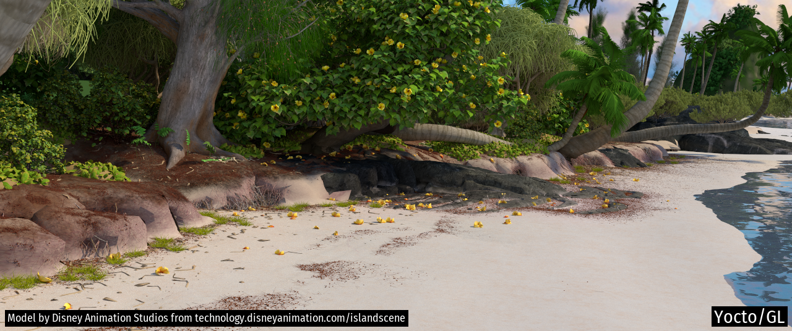

1. Introduction
Synthetic images are used extensively today in industrial, scientific, educational, and entertainment applications. Computer graphics as a field has grown significantly from its inceptions a few decades ago. We can now synthesize images that are indistinguishable from photographs, and simulate complex virtual worlds accurately and often-time interactively.
This book is an attempt to present the foundational ideas of Computer Graphics. It is neither a comprehensive guide to the field, nor it goes deep into any topic. For that, there are already excellent books like Fundamentals of Computer Graphics by Marschner, Shirley et al., Ray Tracing in One Weekend by Shirley, Physically Based Rendering by Pharr, Jakob and Humphreys, Computer Graphics: Principles and Practice by Hughes et al, just to name a few.
We present graphics by splitting it into a few main topics, and for each topic, we present the mathematical foundations and the main algorithms used. All chapters' sections include mostly introductory material, except for the ones marked with '*', which indicate advanced content that may be skipped on first read. In terms of topics, we start with the basics of image and scene representation, to the cover image formation via ray tracing. We introduce modeling and animation techniques and conclude with realistic rendering. You may notice that AI is missing from these topics, even if I am writing this book at the time when AI is starting to have a significant impact on the field. At least for now, AI-assisted methods are not covered in this book, that wants to focus on the foundational techniques.
As you can see, many important topics in graphics are not mentioned, due to lack of time. This is why I consider this book to be a work in progress, and I hope to keep adding chapters and improving the existing ones. I expect to manage the book as a code project, which is the reason for the version number in the title. Once this release has been debugged, I may release the book source on GitHub to allow others to contribute content to it.
Following the steps of many others, the books comes with an implementation of the algorithms presented. In fact, all images and diagrams shown in the book have been rendered using the code provided. Differently from other books, the code is not mentioned in the book, where we want to focus on the ideas and the mathematics behind the algorithms. The code is available at the book's GitHub repository. For now, the implementation is in C++, although I hope to be able to add a Python version soon. The current implementation is reasonably capable. For example, it can be used to render movie scenes like the Disney one shown in Figure 1.1.
I now leave you with the book content. Good reading!

Figure 1.1. Complex image rendered with the code of the book. Model courtesy of Disney Animation Studios.